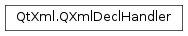

QXmlDeclHandler¶
Inherited by: QXmlDefaultHandler
Detailed Description¶
The
PySide2.QtXml.QXmlDeclHandlerclass provides an interface to report declaration content of XML data.You can set the declaration handler with
QXmlReader.setDeclHandler().This interface is based on the SAX2 extension DeclHandler.
The interface provides
PySide2.QtXml.QXmlDeclHandler.attributeDecl(),PySide2.QtXml.QXmlDeclHandler.internalEntityDecl()andPySide2.QtXml.QXmlDeclHandler.externalEntityDecl()functions.
-
class
PySide2.QtXml.QXmlDeclHandler¶
-
PySide2.QtXml.QXmlDeclHandler.attributeDecl(eName, aName, type, valueDefault, value)¶ Parameters: - eName – unicode
- aName – unicode
- type – unicode
- valueDefault – unicode
- value – unicode
Return type: PySide2.QtCore.boolThe reader calls this function to report an attribute type declaration. Only the effective (first) declaration for an attribute is reported.
The reader passes the name of the associated element in
eNameand the name of the attribute inaName. It passes a string that represents the attribute type intypeand a string that represents the attribute default invalueDefault. This string is one of “#IMPLIED”, “#REQUIRED”, “#FIXED” or an empty string (if none of the others applies). The reader passes the attribute’s default value invalue. If no default value is specified in the XML file,valueis an empty string.If this function returns
falsethe reader stops parsing and reports an error. The reader uses the functionPySide2.QtXml.QXmlDeclHandler.errorString()to get the error message.
-
PySide2.QtXml.QXmlDeclHandler.errorString()¶ Return type: unicode The reader calls this function to get an error string if any of the handler functions returns
false.
-
PySide2.QtXml.QXmlDeclHandler.externalEntityDecl(name, publicId, systemId)¶ Parameters: - name – unicode
- publicId – unicode
- systemId – unicode
Return type: PySide2.QtCore.boolThe reader calls this function to report a parsed external entity declaration. Only the effective (first) declaration for each entity is reported.
The reader passes the name of the entity in
name, the public identifier inpublicIdand the system identifier insystemId. If there is no public identifier specified, it passes an empty string inpublicId.If this function returns
falsethe reader stops parsing and reports an error. The reader uses the functionPySide2.QtXml.QXmlDeclHandler.errorString()to get the error message.
-
PySide2.QtXml.QXmlDeclHandler.internalEntityDecl(name, value)¶ Parameters: - name – unicode
- value – unicode
Return type: PySide2.QtCore.boolThe reader calls this function to report an internal entity declaration. Only the effective (first) declaration is reported.
The reader passes the name of the entity in
nameand the value of the entity invalue.If this function returns
falsethe reader stops parsing and reports an error. The reader uses the functionPySide2.QtXml.QXmlDeclHandler.errorString()to get the error message.
© 2018 The Qt Company Ltd. Documentation contributions included herein are the copyrights of their respective owners. The documentation provided herein is licensed under the terms of the GNU Free Documentation License version 1.3 as published by the Free Software Foundation. Qt and respective logos are trademarks of The Qt Company Ltd. in Finland and/or other countries worldwide. All other trademarks are property of their respective owners.